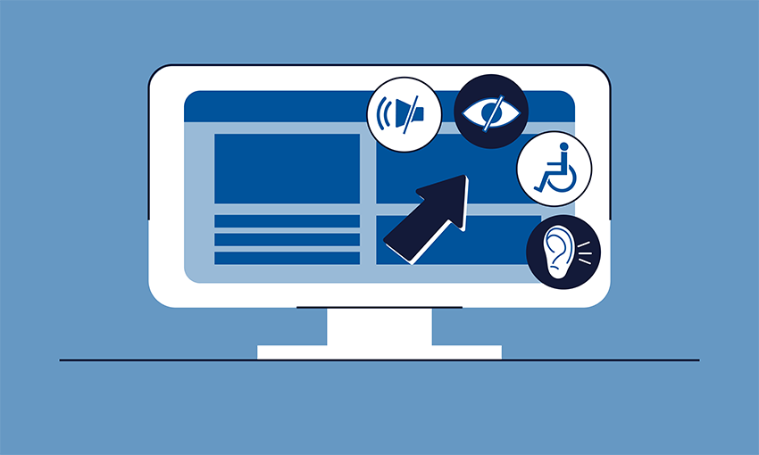

Final Project Reflection
Challenges Faced in this Final Project
Overall, the most challenging obstacle that I faced when completing the Final Project was linking all of my previous labs to my my final project web pages as well as linking them to each other so that a user can access each lab from every page on my web page. This required a lot of attention to detail as it was very simple to make a mistake when establishing the relative paths for each resource's location under my final project folder. Another challenge was updating each prior lab to use a single external style sheet. I ran into an issue that involved internal style sheet CSS rules using generic HTML element selectors, which caused conflicts between the internal CSS rules and the external CSS rules. I was able to solve this issue by updating the internal/embedded CSS rules from using HTML element selectors to specific ID selectors for those conflicting elements. This allowed me to distinguish the CSS styles between different projects that I had completed throughout the semester.
More Thoughts on the Final Project
This final project is a great way for me to keep track of my personal accomplishments as I continue in the Information Technology Program at CCBC. I can now update this portfolio with new projects as I continue taking more classes at CCBC. Hopefully, I could use this portfolio during a professional interview to showcase some of the skills that I have learned throughout my journey at CCBC IT program.